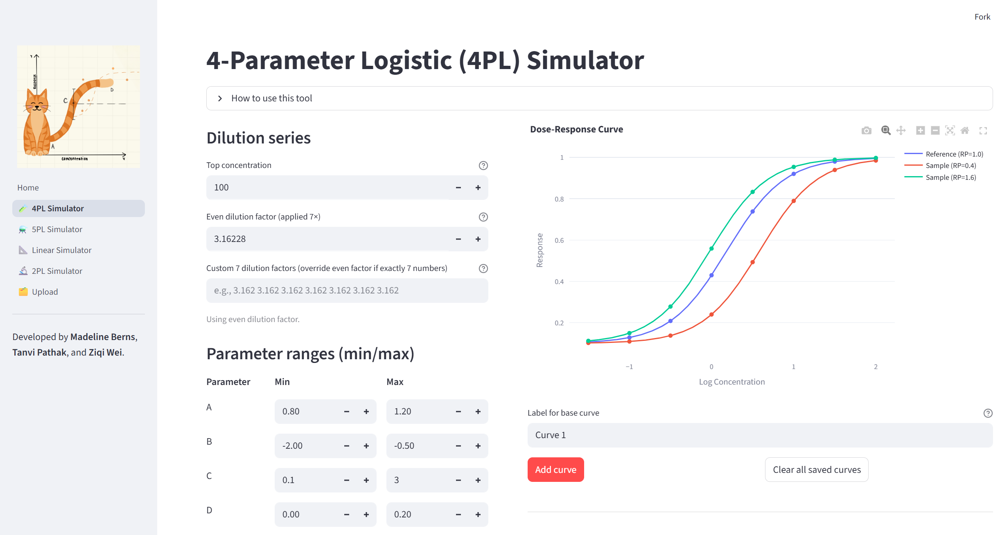

Dose–Response Curve Dashboard (1st Place, BMS Challenge)
Dec 2025
Streamlit dashboard enabling pharmaceutical scientists to simulate 2/4/5PL and linear dose-response models. Includes curve saving, error-based dilution suggestions, and parameter comparison.